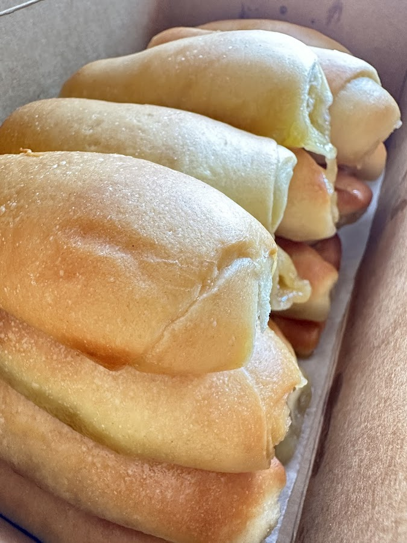
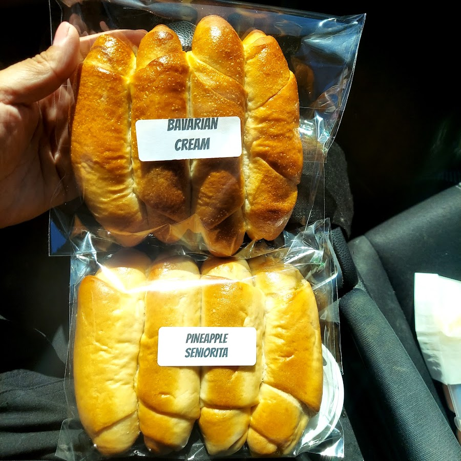
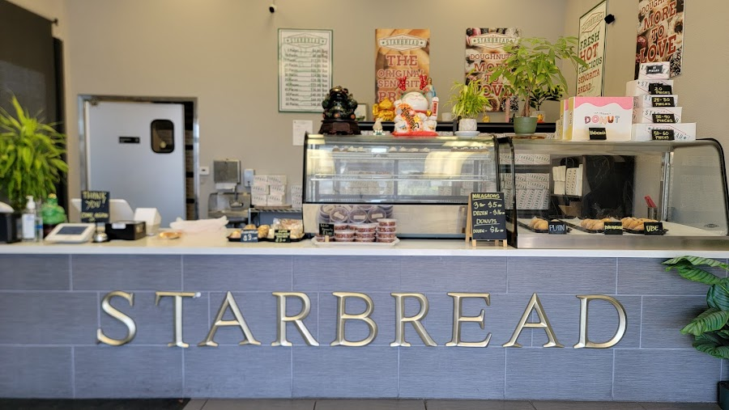
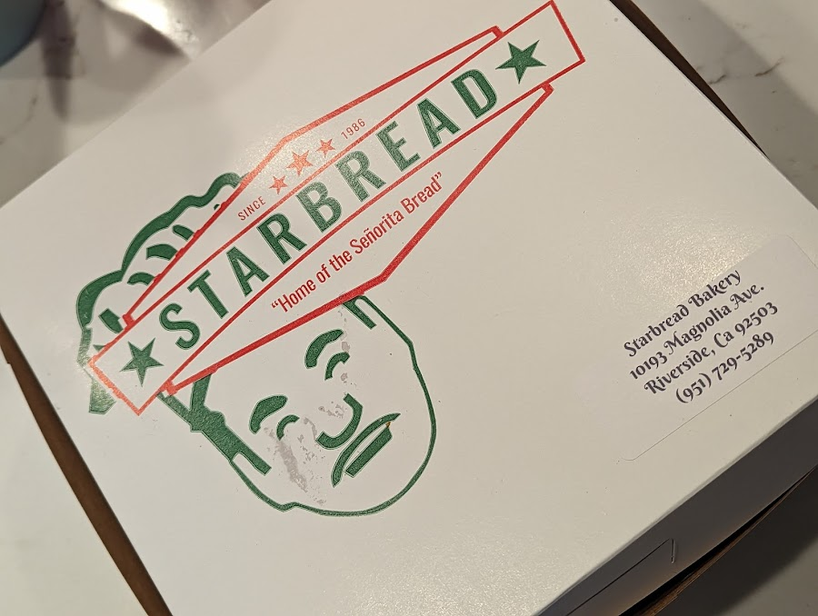
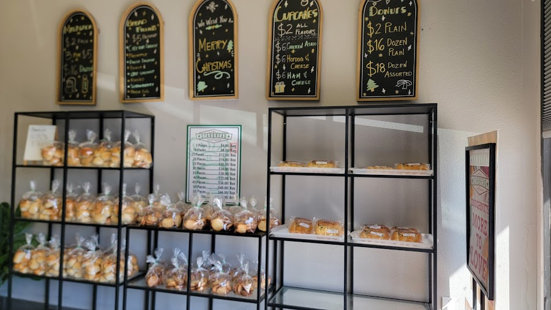
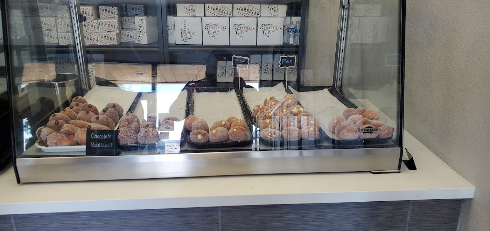

Filipino Bakeshop · Riverside, CA
Home of the
Señorita Bread
Pillowy, buttery, sugar-dusted rolls baked fresh every morning since 1986. Pop in, grab a box, eat one in the parking lot — we won't judge.


7–7
Open every
day, 7am–7pm

The bread that started it all
One bite and you'll get it.
Señorita Bread — soft, sweet, buttery rolls rolled in fine sugar — is the reason people drive across town and freeway-hop the 91 to get here. We've been baking it since 1986, and we still bake it the same way: warm, pillowy, and impossible to eat just one.
Beyond the original, you'll find it in flavors like ube, pineapple and Bavarian cream — plus malasadas, cupcakes, donuts and a couple of savory cheese bites. Boxes of 30 make the kind of gift people actually remember.



In their words
What people say
“Piping hot, pillowy soft, buttery goodness… I couldn't resist and I had to eat one in the parking lot! Sooooo so good. These make such great hostess gifts.”
“The bread here is amazing and always great customer service. The guava bread is to die for.”
“So delicious I cannot just eat one — best treat to take to any gathering or parties.”
“I usually come here for the Señorita bread, but everything is delicious. The friendly people working here are always fabulous too. ‘Kain tayo!’”
“As a returning customer, I highly recommend the Señorita Bread.”
Come by
Find us on Magnolia
First door on the left of the plaza, near Tyler St and just off the 91 freeway — with plenty of parking. Stop in for a warm box on your way home.
Address
10193 Magnolia Ave, Riverside, CA 92503
Phone
(951) 729-5289Hours
Monday through Sunday — fresh from open.